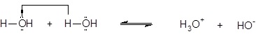
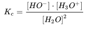
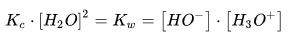
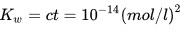
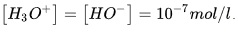
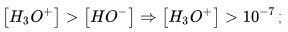
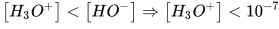
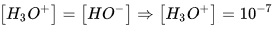
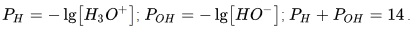

Apa este un compus anorganic polar, cu formula chimică H
2O. Molecula sa este formată prin combinarea a doi atomi dehidrogen cu unul de oxigen. Este de departe cea mai utilizată substanță, astfel că unii biochimiști numesc apa ca fiind un „solvent universal", pentru abilitatea sa de a dizolva multe substanțe. Această proprietate ȋi dă apei posibilitatea să fie și „solventul lumii vii".
Este singura substanță comună care există sub toate cele trei forme de agregare ȋn natură: solidă (gheață), lichidă (apa) șigazoasă (abur sau vapori).
Moleculele de apă formează legături de hidrogen ȋntre ele, fiind puternic polare. Polaritatea moleculei de apă permitesepararea ȋn ioni și formarea de legături puternice cu alte substanțe polare, precum alcoolii și acizii, astfel dizolvȃndu-le. Legăturile de hidrogen sunt motivul pentru multe dintre proprietățile speciale ale apei.
Ionizarea apei
Apa poate funcționa atȃt ca acid cȃt și ca bază. Asemenea substanțe, care se comportă ca acizi față de baze și ca baze fațăde acizi se numesc amfoliți sau substanțe amfotere. Ȋntre două molecule de apă, poate apare următoarea reacție reversibilă:

Reacția de mai sus se numește și reacția de ionizare a apei, pentru că moleculele se transformă ȋn ioni. Deoarece este oreacție reversibilă, avem constanta de echilibru:

Echilibrul reacției de ionizare este mult deplasat spre stȃnga. Cantitatea de apă are valoare mare și se poate introduce ȋn K
c,obținȃndu-se astfel o constantănouă, Kw, care se numește produsul ionic al apei.

La o temperature de 25 grade celsius,

Ȋn cazul apei distilate,

Ȋn funcție de concetrațiile ionilor de hidroniu dintr-o soluție, ele se ȋmpart ȋn:
a) soluții acide, unde

b) soluții bazice, unde

c) soluții neutre, unde

Există două mărimi cu ajutorul cărora se apreciază caracterul soluțiilor:

Bibliografie: https://ro.wikipedia.org/wiki/Ap%C4%83_(molecul%C4%83)